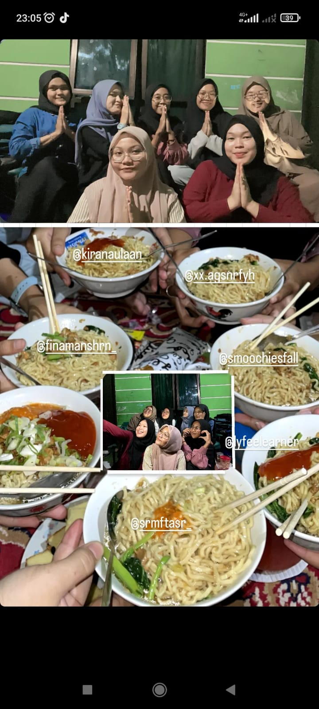

Tentang Kami
Sejarah Kami
Warung Bakso Telor SMK didirikan pada tahun 2020 oleh Nona CICI PRIHARTINI. Dimulai sebagai warung kecil di sudut jalan, kami telah tumbuh menjadi salah satu warung bakso yang paling dikenal di kota ini. Dengan resep rahasia yang kami buat, kami berkomitmen untuk menyajikan bakso dengan cita rasa otentik dan kualitas terbaik.
Visi & Misi
Visi: Menjadi warung bakso terkemuka di Indonesia yang dikenal karena kualitas dan rasa yang luar biasa.
Misi:
- Menyediakan bakso dengan bahan-bahan berkualitas tinggi.
- Mengutamakan kepuasan pelanggan melalui layanan yang ramah dan cepat.
- Mendukung komunitas lokal dengan menyelenggarakan acara dan kegiatan sosial.
Tim Kami
Tim kami terdiri dari profesional yang berdedikasi dan berpengalaman dalam industri kuliner. Kami bekerja sama untuk menciptakan pengalaman kuliner yang tak terlupakan bagi pelanggan kami.

Nyonya bos
Pendiri & Kepala Koki

Pecinta bakso
Pelanggan Setia
Nilai-Nilai Kami
- Integritas: Kami selalu berusaha untuk jujur dan transparan dalam segala hal yang kami lakukan.
- Kualitas: Kami berkomitmen untuk menggunakan bahan-bahan terbaik dan menjaga standar kualitas yang tinggi.
- Komunitas: Kami berusaha untuk memberi kembali kepada komunitas dengan berbagai cara.
- Inovasi: Kami selalu mencari cara baru untuk menyajikan bakso yang lebih baik dan meningkatkan pengalaman pelanggan.